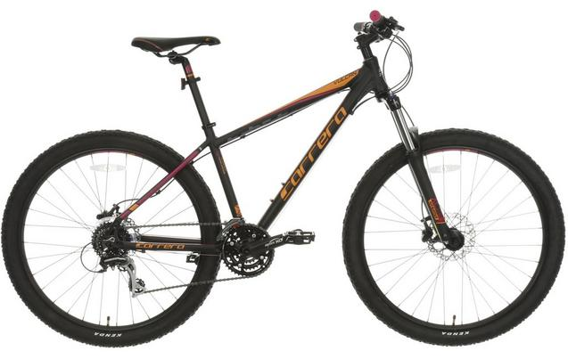

Carrera Vulcan Womens Mountain Bike

The Carrera Vulcan Women's Mountain Bike is all about performance.
The lightweight aluminium frame is partnered with a Suntour front
suspension fork to absorb all bumps on the trails. 24 speed Shimano
gears help you to tackle the hills with ease, whilst the hydraulic
disc brakes will fill you with confidence thanks to their prescision
braking in all weathers. The larger 27.5" wheels deliver easier handling
on faster trails for an all round quality performance.
Frame: Lightweight aluminium to take the effort out of tougher trails
Forks: Suntour Front suspension fork with 120mm travel for tackling all obstacles.
Gears: Shimano Acera 24 gears for effortless shifting in all conditions
Brakes: Clarks hydraulic disc brakes for self-adjusting stopping power whatever the weather
Wheels: Large, easy rolling 27.5" wheels with Kenda MTB tyres for better grip